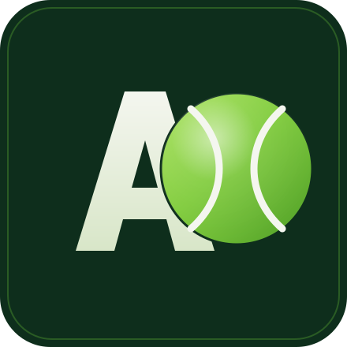
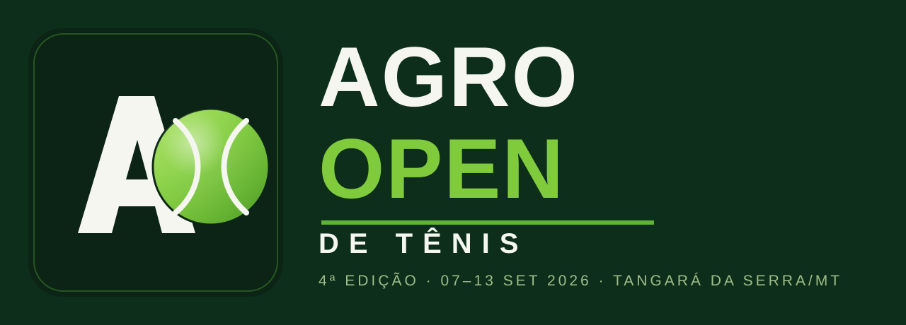

4ª edição · Onde o esporte encontra o agronegócio. Sistema visual do evento global — torneio, leilão beneficente e ativações — realização Tangará Tênis Clube + UISA.


O "O" de OPEN é uma bola de tênis — síntese entre o espírito dos grandes Opens internacionais (Australian Open, US Open) e o agro. Construção 100% original, sem reprodução de marcas registradas de terceiros.
Sans-serif pesada (Arial Black / Anton / Archivo Black). Caixa alta, peso 900, espaçamento justo. Usada em manchetes e números.
Sans-serif neutra (Arial / Inter / Segoe UI). Pesos 400–700 para leitura confortável em web e impresso.
Caixa alta, letter-spacing largo (4–6px), peso 700, cor verde. Usada em seções, datas e categorias.